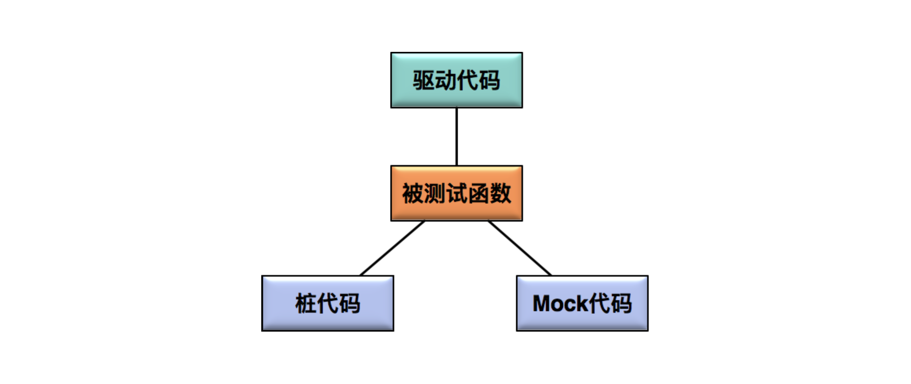
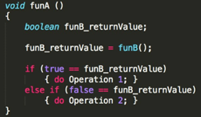
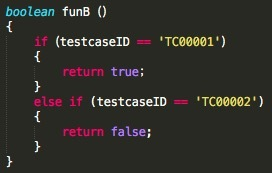

- 00 开篇词 从“小工”到“专家”，我的软件测试修炼之道.md.html
- 01 你真的懂测试吗？从“用户登录”测试谈起.md.html
- 02 如何设计一个“好的”测试用例？.md.html
- 03 什么是单元测试？如何做好单元测试？.md.html
- 04 为什么要做自动化测试？什么样的项目适合做自动化测试？.md.html
- 05 你知道软件开发各阶段都有哪些自动化测试技术吗？.md.html
- 06 你真的懂测试覆盖率吗？.md.html
- 07 如何高效填写软件缺陷报告？.md.html
- 08 以终为始，如何才能做好测试计划？.md.html
- 09 软件测试工程师的核心竞争力是什么？.md.html
- 10 软件测试工程师需要掌握的非测试知识有哪些？.md.html
- 11 互联网产品的测试策略应该如何设计？.md.html
- 12 从0到1：你的第一个GUI自动化测试.md.html
- 13 效率为王：脚本与数据的解耦 + Page Object模型.md.html
- 14 更接近业务的抽象：让自动化测试脚本更好地描述业务.md.html
- 15 过不了的坎：聊聊GUI自动化过程中的测试数据.md.html
- 16 脑洞大开：GUI测试还能这么玩（Page Code Gen + Data Gen + Headless）？.md.html
- 17 精益求精：聊聊提高GUI测试稳定性的关键技术.md.html
- 18 眼前一亮：带你玩转GUI自动化的测试报告.md.html
- 19 真实的战场：如何在大型项目中设计GUI自动化测试策略.md.html
- 20 与时俱进：浅谈移动应用测试方法与思路.md.html
- 21 移动测试神器：带你玩转Appium.md.html
- 22 从0到1：API测试怎么做？常用API测试工具简介.md.html
- 23 知其然知其所以然：聊聊API自动化测试框架的前世今生.md.html
- 24 紧跟时代步伐：微服务模式下API测试要怎么做？.md.html
- 25 不破不立：掌握代码级测试的基本理念与方法.md.html
- 26 深入浅出之静态测试方法.md.html
- 27 深入浅出之动态测试方法.md.html
- 28 带你一起解读不同视角的软件性能与性能指标.md.html
- 29 聊聊性能测试的基本方法与应用领域.md.html
- 30 工欲善其事必先利其器：后端性能测试工具原理与行业常用工具简介.md.html
- 31 工欲善其事必先利其器：前端性能测试工具原理与行业常用工具简介.md.html
- 32 无实例无真相：基于LoadRunner实现企业级服务器端性能测试的实践（上）.md.html
- 33 无实例无真相：基于LoadRunner实现企业级服务器端性能测试的实践（下）.md.html
- 34 站在巨人的肩膀：企业级实际性能测试案例与经验分享.md.html
- 35 如何准备测试数据？.md.html
- 36 浅谈测试数据的痛点.md.html
- 37 测试数据的“银弹”- 统一测试数据平台（上）.md.html
- 38 测试数据的“银弹”- 统一测试数据平台（下）.md.html
- 39 从小作坊到工厂：什么是Selenium Grid？如何搭建Selenium Grid？.md.html
- 40 从小工到专家：聊聊测试执行环境的架构设计（上）.md.html
- 41 从小工到专家：聊聊测试执行环境的架构设计（下）.md.html
- 42 实战：大型全球化电商的测试基础架构设计.md.html
- 43 发挥人的潜能：探索式测试.md.html
- 44 测试先行：测试驱动开发(TDD).md.html
- 45 打蛇打七寸：精准测试.md.html
- 46 安全第一：渗透测试.md.html
- 47 用机器设计测试用例：基于模型的测试.md.html
- 48 优秀的测试工程师为什么要懂大型网站的架构设计？.md.html
- 49 深入浅出网站高性能架构设计.md.html
- 50 深入浅出网站高可用架构设计.md.html
- 51 深入浅出网站伸缩性架构设计.md.html
- 52 深入浅出网站可扩展性架构设计.md.html
- 测试专栏特别放送 浅谈全链路压测.md.html
- 测试专栏特别放送 答疑解惑第一期.md.html
- 测试专栏特别放送 答疑解惑第七期.md.html
- 测试专栏特别放送 答疑解惑第三期.md.html
- 测试专栏特别放送 答疑解惑第二期.md.html
- 测试专栏特别放送 答疑解惑第五期.md.html
- 测试专栏特别放送 答疑解惑第六期.md.html
- 测试专栏特别放送 答疑解惑第四期.md.html
- 结束语 不是结束，而是开始.md.html
- 捐赠
03 什么是单元测试？如何做好单元测试？
今天我要跟你分享的主题是单元测试，如果你没有开发背景，感觉这篇文章理解起来有难度，那你可以在学完后续的“代码级测试”系列的文章后，再回过头来看一遍这篇文章，相信你会有醍醐灌顶的感觉。
什么是单元测试？
在正式开始今天的话题之前，我先给你分享一个工厂生产电视机的例子。
工厂首先会将各种电子元器件按照图纸组装在一起构成各个功能电路板，比如供电板、音视频解码板、射频接收板等，然后再将这些电路板组装起来构成一个完整的电视机。
如果一切顺利，接通电源后，你就可以开始观看电视节目了。但是很不幸，大多数情况下组装完成的电视机根本无法开机，这时你就需要把电视机拆开，然后逐个模块排查问题。
假设你发现是供电板的供电电压不足，那你就要继续逐级排查组成供电板的各个电子元器件，最终你可能发现罪魁祸首是一个电容的故障。这时，为了定位到这个问题，你已经花费了大量的时间和精力。
那在后续的生产中，如何才能避免类似的问题呢？
你可能立即就会想到，为什么不在组装前，就先测试每个要用到的电子元器件呢？这样你就可以先排除有问题的元器件，最大程度地防止组装完成后逐级排查问题的事情发生。
实践也证明，这的确是一个行之有效的好办法。
如果把电视机的生产、测试和软件的开发、测试进行类比，你可以发现：
电子元器件就像是软件中的单元，通常是函数或者类，对单个元器件的测试就像是软件测试中的单元测试；
组装完成的功能电路板就像是软件中的模块，对电路板的测试就像是软件中的集成测试；
电视机全部组装完成就像是软件完成了预发布版本，电视机全部组装完成后的开机测试就像是软件中的系统测试。
通过这个类比，相信你已经体会到了单元测试对于软件整体质量的重要性，那么单元测试到底是什么呢？
单元测试是指，对软件中的最小可测试单元在与程序其他部分相隔离的情况下进行检查和验证的工作，这里的最小可测试单元通常是指函数或者类。
单元测试通常由开发工程师完成，一般会伴随开发代码一起递交至代码库。单元测试属于最严格的软件测试手段，是最接近代码底层实现的验证手段，可以在软件开发的早期以最小的成本保证局部代码的质量。
另外，单元测试都是以自动化的方式执行，所以在大量回归测试的场景下更能带来高收益。
同时，你还会发现，单元测试的实施过程还可以帮助开发工程师改善代码的设计与实现，并能在单元测试代码里提供函数的使用示例，因为单元测试的具体表现形式就是对函数以各种不同输入参数组合进行调用，这些调用方法构成了函数的使用说明。
如何做好单元测试？
要做好单元测试，你首先必须弄清楚单元测试的对象是代码，以及代码的基本特征和产生错误的原因，然后你必须掌握单元测试的基本方法和主要技术手段，比如什么是驱动代码、桩代码和Mock代码等。
第一，代码的基本特征与产生错误的原因
开发语言多种多样，程序实现的功能更是千变万化，我可以提炼出代码的基本特征，并总结出代码缺陷的主要原因么？答案是肯定，你静下心来思考时，会发现其中是有规律可寻的。
因为无论是开发语言还是脚本语言，都会有条件分支、循环处理和函数调用等最基本的逻辑控制，如果抛开代码需要实现的具体业务逻辑，仅看代码结构的话，你会发现所有的代码都是在对数据进行分类处理，每一次条件判定都是一次分类处理，嵌套的条件判定或者循环执行，也是在做分类处理。
如果有任何一个分类遗漏，都会产生缺陷；如果有任何一个分类错误，也会产生缺陷；如果分类正确也没有遗漏，但是分类时的处理逻辑错误，也同样会产生缺陷。
可见，要做到代码功能逻辑正确，必须做到分类正确并且完备无遗漏，同时每个分类的处理逻辑必须正确。
在具体的工程实践中，开发工程师为了设计并实现逻辑功能正确的代码，通常会有如下的考虑过程：
如果要实现正确的功能逻辑，会有哪几种正常的输入；
是否有需要特殊处理的多种边界输入；
各种潜在非法输入的可能性以及如何处理。
讲到这里，你有没有回想起我跟你分享的“等价类”。没错，这些开发工程师眼中的代码“功能点”，就是单元测试的“等价类”。
第二，单元测试用例详解
在实际工作中，你想做好单元测试，就必须对单元测试的用例设计有深入的理解。
通常来讲，单元测试的用例是一个“输入数据”和“预计输出”的集合。 你需要针对确定的输入，根据逻辑功能推算出预期正确的输出，并且以执行被测试代码的方式进行验证，用一句话概括就是“在明确了代码需要实现的逻辑功能的基础上，什么输入，应该产生什么输出”。
但是，对于单元测试来讲，测试用例的“输入数据”和“预计输出”可能远比你想得要复杂得多。
首先，让我来解释一下单元测试用例“输入数据”都有哪些种类，如果你想当然的认为只有被测试函数的输入参数是“输入数据”的话，那就大错特错了。 这里我总结了几种“输入数据”，希望可以帮助你理解什么才是完整的单元测试“输入数据”：
被测试函数的输入参数；
被测试函数内部需要读取的全局静态变量；
被测试函数内部需要读取的成员变量；
函数内部调用子函数获得的数据；
函数内部调用子函数改写的数据；
嵌入式系统中，在中断调用时改写的数据；
…
然后，让我们再来看看“预计输出”，如果没有明确的预计输出，那么测试本身就失去了意义。同样地，“预计输出” 绝对不是只有函数返回值这么简单，还应该包括函数执行完成后所改写的所有数据。 具体来看有以下几大类：
被测试函数的返回值；
被测试函数的输出参数；
被测试函数所改写的成员变量；
被测试函数所改写的全局变量；
被测试函数中进行的文件更新；
被测试函数中进行的数据库更新；
被测试函数中进行的消息队列更新；
…
另外，对于预计输出值，你必须严格根据代码的功能逻辑来设定，而不能通过阅读代码来推算预期输出，否则就是“掩耳盗铃”了。
你不要觉得好笑，这种情况经常出现。主要原因是，开发工程师自己测试自己写的代码时会有严重的思维惯性，以至于会根据自己的代码实现来推算预计输出。
最后，我还要再提一个点，如果某些等价类或者边界值，开发工程师在开发的时候都没有考虑到，测试的时候就更不会去设计对应的测试用例了，这样也就会造成测试盲区。
第三，驱动代码，桩代码和Mock代码
驱动代码，桩代码和Mock代码，是单元测试中最常出现的三个名词。驱动代码是用来调用被测函数的，而桩代码和Mock代码是用来代替被测函数调用的真实代码的。
- 驱动代码，桩代码和Mock代码三者的逻辑关系
驱动代码（Driver）指调用被测函数的代码，在单元测试过程中，驱动模块通常包括调用被测函数前的数据准备、调用被测函数以及验证相关结果三个步骤。驱动代码的结构，通常由单元测试的框架决定。
桩代码（Stub）是用来代替真实代码的临时代码。 比如，某个函数A的内部实现中调用了一个尚未实现的函数B，为了对函数A的逻辑进行测试，那么就需要模拟一个函数B，这个模拟的函数B的实现就是所谓的桩代码。
为了帮你理解，我带你看下这个例子：假定函数A是被测函数，其内部调用了函数B（具体伪代码如下）：
- 被测函数A内部调用了函数B
在单元测试阶段，由于函数B尚未实现，但是为了不影响对函数A自身实现逻辑的测试，你可以用一个假的函数B来代替真实的函数B，那么这个假的函数B就是桩函数。
为了实现函数A的全路径覆盖，你需要控制不同的测试用例中函数B的返回值，那么桩函数B的伪代码就应该是这个样子的：
当执行第一个测试用例的时候，桩函数B应该返回true，而当执行第二个测试用例的时候，桩函数B应该返回false。
这样就覆盖了被测试函数A的if-else的两个分支。

桩函数内部实现
从这个例子可以看出，桩代码的应用首先起到了隔离和补齐的作用，使被测代码能够独立编译、链接，并独立运行。同时，桩代码还具有控制被测函数执行路径的作用。
所以，编写桩代码通常需要遵守以下三个原则：
桩函数要具有与原函数完全相同的原形，仅仅是内部实现不同，这样测试代码才能正确链接到桩函数；
用于实现隔离和补齐的桩函数比较简单，只需保持原函数的声明，加一个空的实现，目的是通过编译链接；
实现控制功能的桩函数是应用最广泛的，要根据测试用例的需要，输出合适的数据作为被测函数的内部输入。
Mock代码和桩代码非常类似，都是用来代替真实代码的临时代码，起到隔离和补齐的作用。但是很多人，甚至是具有多年单元测试经验的开发工程师，也很难说清这二者的区别。
在我看来，Mock代码和桩代码的本质区别是：测试期待结果的验证（Assert and Expectiation）。
对于Mock代码来说，我们的关注点是Mock方法有没有被调用，以什么样的参数被调用，被调用的次数，以及多个Mock函数的先后调用顺序。所以，在使用Mock代码的测试中，对于结果的验证（也就是assert），通常出现在Mock函数中。
对于桩代码来说，我们的关注点是利用Stub来控制被测函数的执行路径，不会去关注Stub是否被调用以及怎么样被调用。所以，你在使用Stub的测试中，对于结果的验证（也就是assert），通常出现在驱动代码中。
在这里，我只想让你理解两者的本质区别以确保你知识结构的完整性，如果你想深入比较，可以参考马丁·福勒（Martin Fowler）的著名文章《Mock代码不是桩代码》（Mocks Aren’t Stubs）。
因为从实际应用的角度看，就算你不能分清Mock代码和桩代码，也不会影响你做好单元测试，所以我并没有从理论层面去深入比较它们的区别。
实际项目中如何开展单元测试？
最后我要跟你聊一下，实际软件项目中如何开展单元测试？
并不是所有的代码都要进行单元测试，通常只有底层模块或者核心模块的测试中才会采用单元测试。
你需要确定单元测试框架的选型，这和开发语言直接相关。比如，Java最常用的单元测试框架是Junit和TestNG；C/C++最常用的单元测试框架是CppTest和Parasoft C/C++test；框架选型完成后，你还需要对桩代码框架和Mock代码框架选型，选型的主要依据是开发所采用的具体技术栈。- 通常，单元测试框架、桩代码/Mock代码的选型工作由开发架构师和测试架构师共同决定。
为了能够衡量单元测试的代码覆盖率，通常你还需要引入计算代码覆盖率的工具。不同的语言会有不同的代码覆盖率统计工具，比如Java的JaCoCo，JavaScript的Istanbul。在后续的文章中，我还会详细为你介绍代码覆盖率的内容。
最后你需要把单元测试执行、代码覆盖率统计和持续集成流水线做集成，以确保每次代码递交，都会自动触发单元测试，并在单元测试执行过程中自动统计代码覆盖率，最后以“单元测试通过率”和“代码覆盖率”为标准来决定本次代码递交是否能够被接受。
如果你有开发背景，那么入门单元测试是比较容易的。但真正在项目中全面推行单元测试时，你会发现还有一些困难需要克服：
紧密耦合的代码难以隔离；
隔离后编译链接运行困难；
代码本身的可测试性较差，通常代码的可测试性和代码规模成正比；
无法通过桩代码直接模拟系统底层函数的调用；
代码覆盖率越往后越难提高。
总结
我给你详细介绍了单元测试的概念，和你重点讨论了用例的组成，以及在实际项目中开展单元测试的方法，你需要注意以下三个问题：
代码要做到功能逻辑正确，必须做到分类正确并且完备无遗漏，同时每个分类的处理逻辑必须正确；
单元测试是对软件中的最小可测试单元在与软件其他部分相隔离的情况下进行的代码级测试；
桩代码起到了隔离和补齐的作用，使被测代码能够独立编译、链接，并运行。
思考题
你所在的公司有做单元测试吗？实施单元测试过程中遇到过哪些问题，你是如何解决的？
欢迎你给我留言。
© 2019 - 2023 Liangliang Lee. Powered by gin and hexo-theme-book.